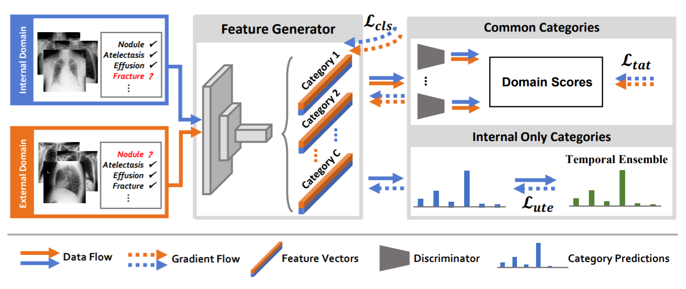
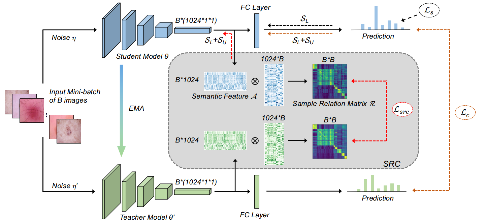
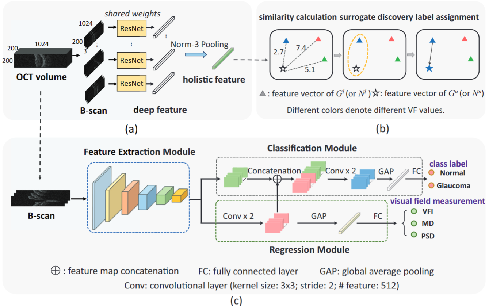
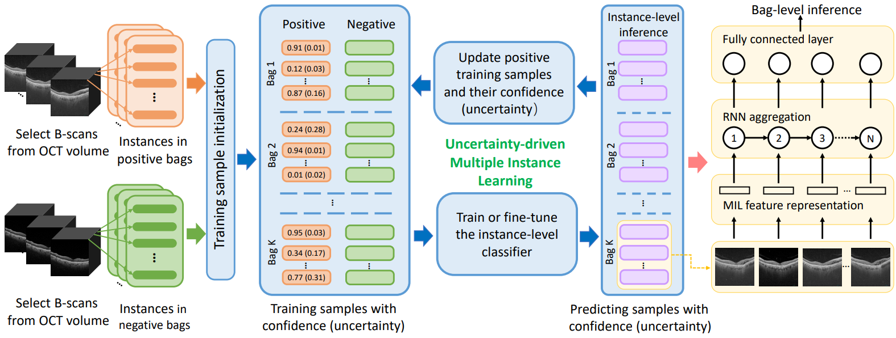
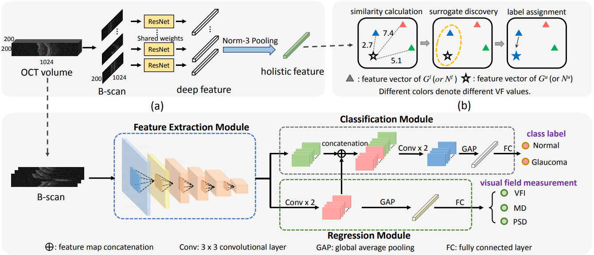

Luyang LuoPh.D.
Rm 1024, Ho Sin-Hang Engineering Building 


|
 |
Biography
I am currently a third year Ph.D. student in the Department of Computer Science and Engineering, The Chinese University of Hong Kong, supervised by Prof. HENG Pheng-Ann and Prof.WONG, Tien-Tsin. Previously, I received my B.Sc. from Department of Computer Science and Engineering in The Chinese University of Hong Kong in 2018.
My current research interest is applying state-of-the-art deep learning algorithms on computed-aided medical image diagnosis, especially on chest radiographs.
News
- [06/2020] One paper on learning imperfect multi-site ChestX-ray data was accepted by IEEE TMI.
- [05/2020] One paper on semi-supervised learning was accepted by IEEE TMI.
- [02/2020] Two papers accepted by MedIA and IEEE JBHI, respectively.
- [08/2019] One paper on OCT glaucoma screening was accepted by The Lacent Digital Health as cover page.
- [06/2019] Two papers were early accepted by MICCAI.
- [03/2019] One paper was accepted by JMRI.
Selected Publications
|
 |
Deep Mining External Imperfect Data for Chest X-ray Disease Screening. Luyang Luo, Lequan Yu, Hao Chen, Quande Liu, Xi Wang, Jiaqi Xu, Pheng-Ann Heng. IEEE Transactions on Medical Imaging (TMI), 2020. [paper] |
|
 |
Semi-supervised Medical Image Classification with Relation-driven Self-ensembling Model. Quande Liu, Lequan Yu, Luyang Luo, Qi Dou, Pheng-Ann Heng. IEEE Transactions on Medical Imaging (TMI), 2020. |
|
 |
Towards multi-center glaucoma OCT image screening with semi-supervised joint structure and function multi-task learning. Xi Wang, Hao Chen, An-Ran Ran, Luyang Luo, Poemen P Chan, Clement C Tham, Robert T Chang, Suria S Mannil, Carol Y Cheung, Pheng-Ann Heng. Medical Image Analysis (MedIA), 2020. [paper] |
|
 |
UD-MIL: Uncertainty-driven Deep Multiple Instance Learning for OCT Image Classification. Xi Wang, Fangyao Tang, Hao Chen, Luyang Luo, Ziqi Tang, An-Ran Ran, Carol Y Cheung, Pheng Ann Heng. IEEE Journal of Biomedical and Health Informatics (IEEE JBHI), 2020. [paper] |

|
Deep Angular Embedding and Feature Correlation Attention for Breast MRI Cancer Analysis Luyang Luo , Hao Chen, Xi Wang, Qi Dou, Huangjing Lin, Juan Zhou, Gongjie Li, Pheng-Ann Heng Medical Image Computing and Computer Assisted Intervention (MICCAI), 2019. [paper] |
|
 |
Unifying Structure Analysis and Surrogate-driven Function Regression for Glaucoma OCT Image Screening. Xi Wang, Hao Chen, Luyang Luo, An-ran Ran, Poemen P Chan, Clement C Tham, Carol Y Cheung, Pheng-Ann Heng. Medical Image Computing and Computer Assisted Intervention (MICCAI), 2019. [paper] |

|
Detection of glaucomatous optic neuropathy with spectral-domain optical coherence tomography: a retrospective training and validation deep-learning analysis. An Ran Ran, Carol Y Cheung, Xi Wang, Hao Chen, Luyang Luo, Poemen P Chan, Mandy OM Wong, Robert T Chang, Suria S Mannil, Alvin L Young, Hon-wah Yung, Chi Pui Pang, Pheng-Ann Heng, Clement C Tham. The Lancet Digital Health, 2019. [paper] |

|
Weakly supervised 3D deep learning for breast cancer classification and localization of the lesions in MR images. Juan Zhou*, Luyang Luo*, Qi Dou, Hao Chen, Cheng Chen, Gong‐Jie Li, Ze‐Fei Jiang, Pheng‐Ann Heng. Journal of Magnetic Resonance Imaging (JMRI), 2019. [paper] |
Teaching
| 2019-2020 | Spring | Computer Principles and C Programming (CSCI 1510) |
| 2019-2020 | Fall | Digital Logic and Systems (ENGG 2020) |
| 2018-2019 | Fall | Digital Logic and Systems (ENGG 2020) |
© Luyang Luo | Last updated: July 2020